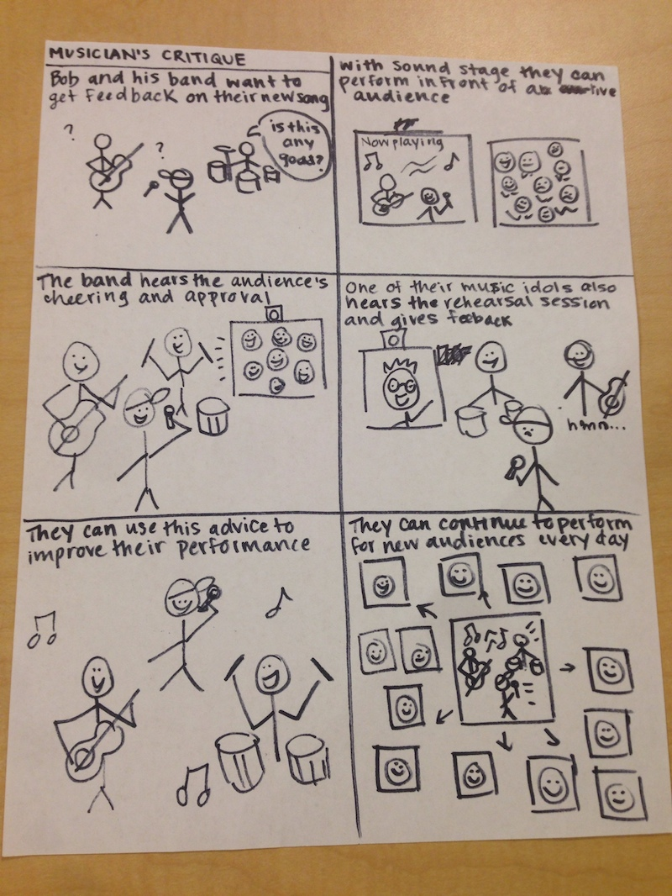
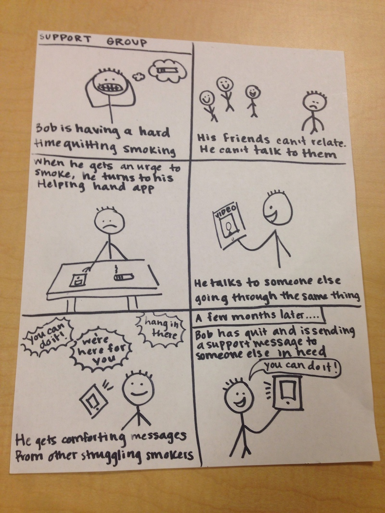
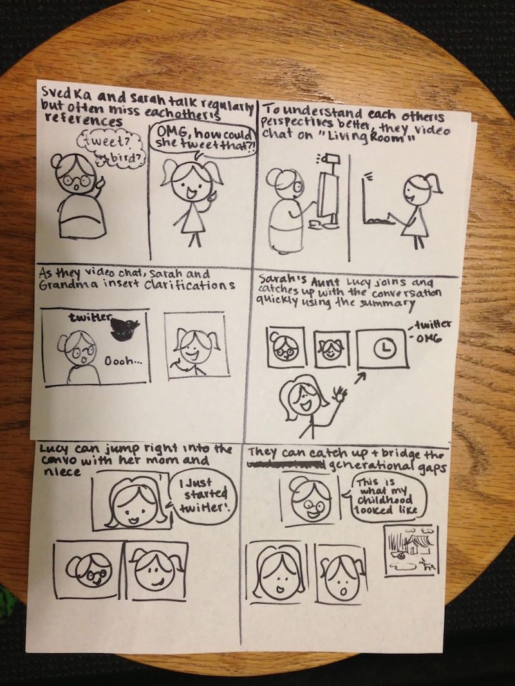

Storyboarding
We wrote storyboards for our three ideas in Milestone 1 in order to flesh them out a bit more.
Musician Critique

We received feedback on our original idea that this was not everyday and directly communicating with each other. We talked to the teaching staff/brainstormed ways to make this a more communicative idea that fit the prompt, and came up with the idea of a live practice session for remote audiences. Music practice is something that must be done regularly to maintain one's skill, so this is an everyday context. The idea here was that musicians perform differently in front of an audience, and that this remote practice system will allow musicians to develop their skills in ways that individual practice cannot.
Addict Support Network

"Living Room" for cultural/generational translation
